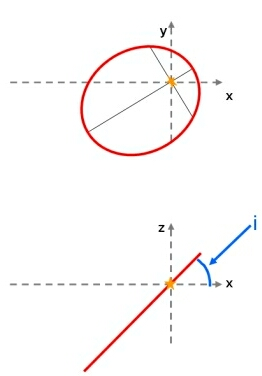

Along with the argument of perihelion and the ascending node, the orbital inclination (i) is one of the elements that must be specified in order to define the orientation of an elliptical orbit.
Although all the planets and asteroids follow elliptical orbits around the Sun (obeying Kepler’s First Law), these orbits do not all lie in the same plane – they are usually tilted with respect to each other. As Earth-bound humans, we have adopted the plane in which the Earth moves around the Sun (the ecliptic) as our reference plane for the Solar System. With this convention, the Earth has an orbital inclination of zero degrees, and the orbital inclinations of other Solar System bodies are measured relative to this (for example, Mars has an orbital inclination of 1.85o, Mercury: 7.00o and Pluto: 17.15o).
Although the ecliptic provides a convenient reference plane from which to measure the orbital inclinations of planets in our Solar System, a different reference plane should be adopted for each of the planetary systems discovered around other stars. One suggestion would be to choose the plane in which the most easily observed planet orbits the central star.
Note: Orbital inclination should not be confused with obliquity – the tilt of a planet’s axis relative to the orbit.